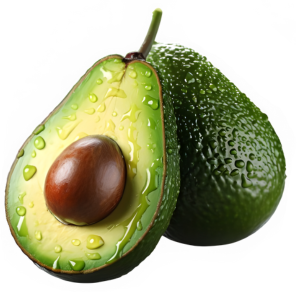
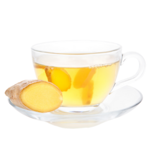
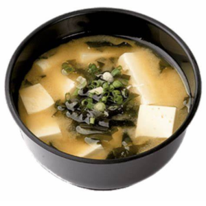
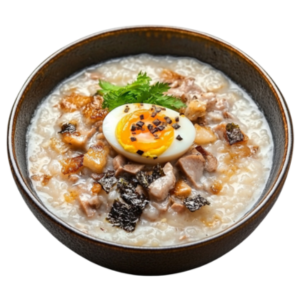
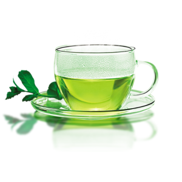
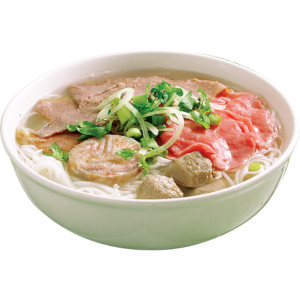
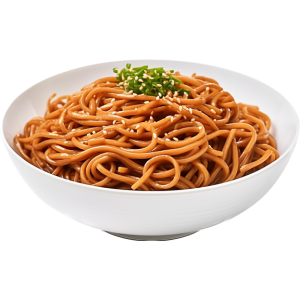

Study Boosters: Asian Food & Drinks

Avocados
Your brain is made of 60% fat, so healthy fats like avocados improve brain function. It’s also a great source of fiber and helps prevent energy crashes.

Brown Rice
Brown rice contains tryptophan, an amino acid that increases serotonin production and helps regulate mood.

Sticky Mango Rice
Combines energy with a touch of sweetness for long study sessions.

Dark Chocolate
Flavonoids in cocoa improve insulin sensitivity, brain function, and energy levels.

Ginger Tea
Boosts blood flow to the brain and provides gentle stimulation.
Avocados, brown rice, sticky mango rice, ginger tea, and dark chocolate all play crucial roles in supporting brain function during study sessions.
Avocados provide healthy fats that enhance brain health and maintain steady energy levels, preventing crashes. Brown rice is rich in tryptophan, boosting serotonin production to improve mood and focus, while the sticky mango rice offers both quick energy and lasting satiety, keeping you fueled for long study hours. Ginger tea stimulates blood circulation to the brain, reducing fatigue and improving mental clarity, and dark chocolate, with its flavonoids, enhances cognitive function and alertness, giving you that extra push when studying
Together, these foods combine to offer sustained energy, sharper focus, and an overall boost to brain health, making them ideal study companions
Stress Relief: Asian Food & Drinks

Miso Soup
A warm and hearty Japanese bowl that completes any meal. Miso soup with Udon noodles, chicken, and veggie toppings makes it both nourishing and comforting.

Congee
A rice porridge popular in many Asian cultures, often eaten for breakfast or as comfort food when sick. It's warm, smooth, and soothing.

Green Tea
Packed with antioxidants and low caffeine, green tea can reduce stress and anxiety while keeping you focused.

Pho
A Vietnamese noodle soup with rich broth, herbs, beef, and rice noodles. The slow-cooked flavors offer warmth and calm.

Soba Noodles
Made from buckwheat, soba noodles are nutritious, light, and often served in a chilled broth—perfect for cooling the mind.
Comforting Asian dishes like Miso soup, a warm and comforting dish, helps regulate digestion and promotes relaxation, providing a soothing effect on both body and mind. Congee, a mild and easily digestible comfort food, is known to calm the stomach and alleviate stress, making it a go-to remedy for a relaxed state. Green tea, with its L-theanine content, promotes a sense of calm without drowsiness, perfect for unwinding after a stressful day. Pho, with its rich broth and aromatic flavors, offers not only nourishment but also a comforting, steamy bowl that can ease tension. Lastly, soba noodles provide a light yet satisfying meal, calming the digestive system and offering a sense of tranquility. Together, these foods bring balance to the body, reduce stress, and help restore inner peace. These foods bring balance back to body and mind.